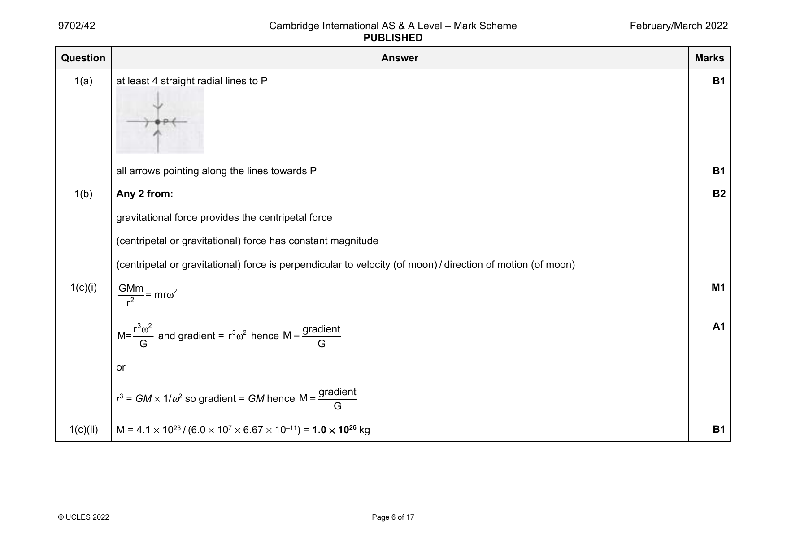

9702-2021-m-42-q01
March 2021 · Paper 42 · Question 1 · 12 marks
1(a) (gravitational) force is (directly) proportional to product of masses B1
force (between point masses) is inversely proportional to the square of their separation B1
1(b) correct read offs from the graph with correct power of ten for R3 C1
4×π2×1.2×1034 C1
M =
6.67×10 −11×2.4×( 365×24×3600 )2
= 3.0×1030 kg A1
1(c)(i) potential energy is zero at infinity B1
(gravitational) forces are attractive B1
work must be done on the rock to move it to infinity B1
1(c)(ii) GMm mv2 GM GM M1
= O R v2 = O R v =
r2 r r r
GMm A1
use of ½ mv2 (e.g. multiplication by ½ m) leading to
2r
1(c)(iii) −GM −GMm C1
Ep = φ m and φ = or E =
r p r
Total energy = E + E
k p
GMm −GMm −GMm A1
Total energy= + =
2r r 2r
© UCLES 2021 Page 8 of 19
Official mark scheme pages: 8 · source PDF URL
9702-2021-mj-41-q01
May/June 2021 · Paper 41 · Question 1 · 10 marks
1(a) force per unit mass B1
1(b) GMm / r 2 = mrω 2 and ω = 2π/T C1
or
GMm / r 2 = mv2 / r and v = 2πr / T
6.67 × 10–11 × 6.0 × 1024 = r3 × [2π / (94 × 60)]2 C1
r = 6.9 × 106 m A1
1(c)(i) r3ω2 = constant or r3 / T2 = constant C1
r3 / (6.9 × 106)3 = (150 / 94)2 so r = 9.4 × 106 m A1
or
GMT2/4π2 = r3 and clear that M is 6.0 × 1024 (C1)
6.67 × 10–11 × 6.0 × 1024 = r3 × [2π / (150 × 60)]2 (A1)
so r = 9.4 × 106 m
1(c)(ii) separation increases so (potential energy) increases B1
or
movement is against gravitational force so (potential energy) increases
1(c)(iii) potential energy = (–)GMm / r C1
ΔE = 6.67 × 10–11 × 6.0 × 1024 × 1200 × [(6.9 × 106)–1 – (9.4 × 106)–1] C1
P
= 1.9 × 1010 J A1
© UCLES 2021 Page 8 of 18
Official mark scheme pages: 8 · source PDF URL
9702-2021-mj-42-q01
May/June 2021 · Paper 42 · Question 1 · 6 marks
1(a) (gravitational) force per unit mass B1
1(b)(i) g = GM / r2 C1
= (6.67 × 10–11 × 6.42 × 1023) / (3.39 × 106)2 A1
= 3.73 N kg–1
1(b)(ii) a = rω2 and ω = 2π / T C1
or
a = v2 / r and v = 2πr / T
a = 3.39 × 106 × (2π / (24.6 × 3600))2 A1
= 0.0171 m s–2
1(b)(iii) force per unit mass = 3.73 – 0.0171 A1
= 3.71 N kg–1
© UCLES 2021 Page 8 of 19
Official mark scheme pages: 8 · source PDF URL
9702-2021-mj-43-q01
May/June 2021 · Paper 43 · Question 1 · 10 marks
1(a) force per unit mass B1
1(b) GMm / r 2 = mrω 2 and ω = 2π/T C1
or
GMm / r 2 = mv2 / r and v = 2πr / T
6.67 × 10–11 × 6.0 × 1024 = r3 × [2π / (94 × 60)]2 C1
r = 6.9 × 106 m A1
1(c)(i) r3ω2 = constant or r3 / T2 = constant C1
r3 / (6.9 × 106)3 = (150 / 94)2 so r = 9.4 × 106 m A1
or
GMT2/4π2 = r3 and clear that M is 6.0 × 1024 (C1)
6.67 × 10–11 × 6.0 × 1024 = r3 × [2π / (150 × 60)]2 (A1)
so r = 9.4 × 106 m
1(c)(ii) separation increases so (potential energy) increases B1
or
movement is against gravitational force so (potential energy) increases
1(c)(iii) potential energy = (–)GMm / r C1
ΔE = 6.67 × 10–11 × 6.0 × 1024 × 1200 × [(6.9 × 106)–1 – (9.4 × 106)–1] C1
P
= 1.9 × 1010 J A1
© UCLES 2021 Page 8 of 18
Official mark scheme pages: 8 · source PDF URL
9702-2021-on-41-q02
Oct/Nov 2021 · Paper 41 · Question 2 · 9 marks
2(a) work done per unit mass B1
(work done in) moving mass from infinity B1
2(b)(i) (gravitational) fields from the Earth and Moon are in opposite directions B1
(resultant is zero where gravitational) fields are equal (in magnitude) B1
2(b)(ii) g ∝ M / r2 C1
5.98 × 1024 / x2 = 7.35 × 1022 / (3.84 × 108 – x)2 A1
leading to x = 3.5 × 108 (m)
2(b)(iii) φ (Earth) = (–)6.67 × 10–11 × (5.98 × 1024 / 3.5 × 108) C1
and
φ (Moon) = (–)6.67 × 10–11 × (7.35 × 1022 / 0.38 × 108)
φ = (–)6.67 × 10–11 × [(5.98 × 1024 / 3.5 × 108) + (7.35 × 1022 / 0.38 × 108)] C1
= – 1.3 × 106 J kg–1 A1
© UCLES 2021 Page 8 of 15
Official mark scheme pages: 8 · source PDF URL
9702-2021-on-42-q02
Oct/Nov 2021 · Paper 42 · Question 2 · 10 marks
2(a) (gravitational) field strength equals (gravitational) potential gradient M1
reference to minus sign A1
2(b)(i) potential is zero at infinity B1
(gravitational) force is attractive B1
(test) mass getting closer (from infinity) loses potential energy B1
2(b)(ii) • potential at (surface of) planet is smaller than at (surface of) moon B2
• potential gradient at (surface of) planet is smaller than at (surface of) moon
• magnitude of potential varies inversely with distance from centre near the spheres
• (point of) maximum potential is nearer to moon than planet
Any two points, 1 mark each
2(b)(iii) sketch: one curve, starting with gradient of decreasing magnitude at 2R and finishing with gradient of increasing magnitude B1
at D – R
field strength shown as zero (only) near the point of maximum potential B1
negative field strength near one sphere and positive field strength near the other B1
© UCLES 2021 Page 8 of 19
Official mark scheme pages: 8 · source PDF URL
9702-2021-on-43-q02
Oct/Nov 2021 · Paper 43 · Question 2 · 9 marks
2(a) work done per unit mass B1
(work done in) moving mass from infinity B1
2(b)(i) (gravitational) fields from the Earth and Moon are in opposite directions B1
(resultant is zero where gravitational) fields are equal (in magnitude) B1
2(b)(ii) g ∝ M / r2 C1
5.98 × 1024 / x2 = 7.35 × 1022 / (3.84 × 108 – x)2 A1
leading to x = 3.5 × 108 (m)
2(b)(iii) φ (Earth) = (–)6.67 × 10–11 × (5.98 × 1024 / 3.5 × 108) C1
and
φ (Moon) = (–)6.67 × 10–11 × (7.35 × 1022 / 0.38 × 108)
φ = (–)6.67 × 10–11 × [(5.98 × 1024 / 3.5 × 108) + (7.35 × 1022 / 0.38 × 108)] C1
= – 1.3 × 106 J kg–1 A1
© UCLES 2021 Page 8 of 15
Official mark scheme pages: 8 · source PDF URL
9702-2022-m-42-q01
March 2022 · Paper 42 · Question 1 · 10 marks


1(a) at least 4 straight radial lines to P B1
all arrows pointing along the lines towards P B1
1(b) Any 2 from: B2
gravitational force provides the centripetal force
(centripetal or gravitational) force has constant magnitude
(centripetal or gravitational) force is perpendicular to velocity (of moon) / direction of motion (of moon)
1(c)(i) GMm M1
= mrω2
r2
r3ω2 gradient A1
M= and gradient = r3ω2 hence M=
G G
or
gradient
r3 = GM × 1/ω2 so gradient = GM hence M=
G
1(c)(ii) M = 4.1 × 1023 / (6.0 × 107 × 6.67 × 10–11) = 1.0 × 1026 kg B1
© UCLES 2022 Page 6 of 17
1(c)(iii) GMm mv2 C1
=
r2 r
GM
= v2
r
6.67×10 −11×1.0×1026 C1
v2=
1.2×108
v2 =5.6×107m s −1
v =7500 m s −1 A1
Question Answer Marks
Official mark scheme pages: 6, 7 · source PDF URL
9702-2022-mj-41-q01
May/June 2022 · Paper 41 · Question 1 · 10 marks
1(a)(i) (gravitational) force is (directly) proportional to product of masses B1
force (between point masses) is inversely proportional to the square of their separation B1
1(a)(ii) g = F / m C1
F = GMm / r2 A1
and so
g = [GMm / r2] / m = GM / r2
1(b)(i) g = (6.67 10–11 7.35 1022) / (1.74 106)2 = 1.62 N kg–1 A1
1(b)(ii) fields (due to Earth and the Moon) have equal magnitudes B1
fields (due to Earth and the Moon) are in opposite directions B1
1(b)(iii) distance of X from Earth = (3.84 108 – x) C1
(G ) 7.35 1022 / x2 = (G ) 5.98 1024 / (3.84 108 – x)2 C1
x = 3.8 107 m A1
© UCLES 2022 Page 7 of 16
Official mark scheme pages: 7 · source PDF URL
9702-2022-mj-42-q01
May/June 2022 · Paper 42 · Question 1 · 10 marks
1(a)(i) work (done) per unit mass B1
work (done on mass) in moving mass from infinity (to the point) B1
1(a)(ii) E = ϕm B1
P
E = (– GM / r) m = – GMm / r
P
or
ϕ = – GM / r and E = ϕm = – GMm / r
P
1(b)(i) E = 6.67 10–11 1.99 1030 2.20 1014 [1 / (6.38 1010) – 1 / (8.44 1011)] C1
P
= 4.23 1023 J A1
1(b)(ii) (gravitational) force is attractive so decrease B1
or
(gravitational) force does work so decrease
1(b)(iii) E = ½m(v 2 – v 2) C1
P 2 1
4.23 1023 = ½ 2.20 1014 (v2 – 341002) C1
v (= 70800 m s–1) = 70.8 km s–1 A1
1(c) both PE and KE equations include m, so path is unchanged B1
© UCLES 2022 Page 7 of 16
Official mark scheme pages: 7 · source PDF URL
9702-2022-mj-43-q01
May/June 2022 · Paper 43 · Question 1 · 10 marks
1(a)(i) (gravitational) force is (directly) proportional to product of masses B1
force (between point masses) is inversely proportional to the square of their separation B1
1(a)(ii) g = F / m C1
F = GMm / r2 A1
and so
g = [GMm / r2] / m = GM / r2
1(b)(i) g = (6.67 10–11 7.35 1022) / (1.74 106)2 = 1.62 N kg–1 A1
1(b)(ii) fields (due to Earth and the Moon) have equal magnitudes B1
fields (due to Earth and the Moon) are in opposite directions B1
1(b)(iii) distance of X from Earth = (3.84 108 – x) C1
(G ) 7.35 1022 / x2 = (G ) 5.98 1024 / (3.84 108 – x)2 C1
x = 3.8 107 m A1
© UCLES 2022 Page 7 of 16
Official mark scheme pages: 7 · source PDF URL
9702-2022-on-41-q01
Oct/Nov 2022 · Paper 41 · Question 1 · 9 marks
1(a) F = (Gm m ) / r 2 M1
1 2
where G is the gravitational constant A1
1(b) gravitational force provides the centripetal force B1
mR 2 = GMm / R 2 and = 2 / T M1
or
mv 2 / R = GMm / R 2 and v = 2R / T
or
42mR / T 2 = GMm / R 2
correct completion of algebra to get T2 = (42 / GM) R3, with identification of (42 / GM) as k A1
1(c)(i) (24 3600)2 = (42 R3) / (6.67 10–11 6.0 1024) C1
R = 4.2 107 m A1
1(c)(ii) (orbit) must be above the Equator B1
(direction) must be from west to east B1
© UCLES 2022 Page 6 of 15
Official mark scheme pages: 6 · source PDF URL
9702-2022-on-43-q01
Oct/Nov 2022 · Paper 43 · Question 1 · 9 marks
1(a) F = (Gm m ) / r 2 M1
1 2
where G is the gravitational constant A1
1(b) gravitational force provides the centripetal force B1
mR 2 = GMm / R 2 and = 2 / T M1
or
mv 2 / R = GMm / R 2 and v = 2R / T
or
42mR / T 2 = GMm / R 2
correct completion of algebra to get T2 = (42 / GM) R3, with identification of (42 / GM) as k A1
1(c)(i) (24 3600)2 = (42 R3) / (6.67 10–11 6.0 1024) C1
R = 4.2 107 m A1
1(c)(ii) (orbit) must be above the Equator B1
(direction) must be from west to east B1
© UCLES 2022 Page 6 of 15
Official mark scheme pages: 6 · source PDF URL
9702-2023-mj-42-q01
May/June 2023 · Paper 42 · Question 1 · 11 marks
1(a) (gravitational) force is (directly) proportional to product of masses B1
force (between point masses) is inversely proportional to the square of their separation B1
1(b) GMm / R2 = mR2 M1
= 2 / T and algebra leading to 42R3 = GMT2 A1
or
GMm / R2 = mv2 / R (M1)
v = 2R / T and algebra leading to 42R3 = GMT2 (A1)
1(c) 42 R3 = 6.67 10–11 5.98 1024 (24 60 60)2 C1
(R = 4.22 107 m)
h = R – (6.37 106) C1
h = (4.22 107) – (6.37 106) A1
= 3.6 107 m
1(d)(i) = 2 / T C1
= 2 / (24 60 60) A1
= 7.3 10–5 rad s–1
1(d)(ii) orbit is from east to west B1
orbit is not equatorial / orbit is polar B1
© UCLES 2023 Page 6 of 15
Official mark scheme pages: 6 · source PDF URL
9702-2024-m-42-q01
March 2024 · Paper 42 · Question 1 · 10 marks
1(a) (gravitational) potential is zero at infinity B1
(gravitational force between two masses is attractive so)
either work is done on a mass to move it away from another mass B1
or work is done on a mass to move it to infinity
1(b)(i) M = (–) gradient / G C1
e.g. M = (1.76 108) / (3.0 10–8 6.67 10–11) = 8.8 1025 kg A1
1(b)(ii) either GMm / r2 = mr2 and = 2 / T C1
or GMm / r2 = mv2 / r and v = 2r / T
or GMm / r2 = 42mr / T2
R3 = 6.67 10–11 8.8 1025 (0.72 24 60 60)2 / 42 C1
R = 8.3 107 m A1
1(b)(iii) E = (GMm / r) – ½mv2 C1
kinetic energy = (½ 1200 84002)
potential energy = (–)[(6.67 10–11 8.8 1025 1200) / (8.3 107)] C1
E = [(6.67 10–11 8.8 1025 1200) / (8.3 107)] A1
– (½ 1200 84002)
= 4.3 1010 J
© Cambridge University Press & Assessment 2024 Page 6 of 14
Official mark scheme pages: 6 · source PDF URL
9702-2024-mj-41-q01
May/June 2024 · Paper 41 · Question 1 · 10 marks
1(a) work done per unit mass B1
work done moving mass from infinity (to the point) B1
1(b)(i) potential is zero at infinity B1
work is done by (two) masses in moving them closer together B1
or
work is done on (two) masses in moving them apart
1(b)(ii) magnitude of potential shown as 4 B1
potential negative and shown as a multiple of – [potential = –4 if fully correct] B1
1(b)(iii) field strength at X: / 4R A1
field strength at Y: 4 / R A1
potential energy at X: –M A1
potential energy at Y: –8M A1
© Cambridge University Press & Assessment 2024 Page 6 of 15
Official mark scheme pages: 6 · source PDF URL
9702-2024-mj-43-q01
May/June 2024 · Paper 43 · Question 1 · 10 marks
1(a) work done per unit mass B1
work done moving mass from infinity (to the point) B1
1(b)(i) potential is zero at infinity B1
work is done by (two) masses in moving them closer together B1
or
work is done on (two) masses in moving them apart
1(b)(ii) magnitude of potential shown as 4 B1
potential negative and shown as a multiple of – [potential = –4 if fully correct] B1
1(b)(iii) field strength at X: / 4R A1
field strength at Y: 4 / R A1
potential energy at X: –M A1
potential energy at Y: –8M A1
© Cambridge University Press & Assessment 2024 Page 6 of 15
Official mark scheme pages: 6 · source PDF URL
9702-2024-on-41-q01
Oct/Nov 2024 · Paper 41 · Question 1 · 12 marks
1(a) (gravitational) force is (directly) proportional to product of masses B1
force (between point masses) is inversely proportional to the square of their separation B1
1(b)(i) (gravitational) force acts perpendicular to direction of motion B1
gravitational force provides centripetal acceleration B1
1(b)(ii) (F =) GMm / x2 = mx2 and = 2 / T M1
or
GMm / x2 = 42mx / T2
completion of algebra leading to x3 = GMT2 / 42 A1
clear indication that B = radius of planet and that A = mass (of planet) B1
1(b)(iii) gradient = 3√(42 / GA) C1
e.g. (1280 – 360) / (12 106) = 3√(42 / [6.67 10–11 A]) C1
A = 1.3 1024 kg A1
intercept = gradient B C1
e.g. 360 = ((1280 – 360) B) / (12 106) A1
B = 4.7 106 m
© Cambridge University Press & Assessment 2024 Page 6 of 15
Official mark scheme pages: 6 · source PDF URL
9702-2024-on-43-q01
Oct/Nov 2024 · Paper 43 · Question 1 · 12 marks
1(a) (gravitational) force is (directly) proportional to product of masses B1
force (between point masses) is inversely proportional to the square of their separation B1
1(b)(i) (gravitational) force acts perpendicular to direction of motion B1
gravitational force provides centripetal acceleration B1
1(b)(ii) (F =) GMm / x2 = mx2 and = 2 / T M1
or
GMm / x2 = 42mx / T2
completion of algebra leading to x3 = GMT2 / 42 A1
clear indication that B = radius of planet and that A = mass (of planet) B1
1(b)(iii) gradient = 3√(42 / GA) C1
e.g. (1280 – 360) / (12 106) = 3√(42 / [6.67 10–11 A]) C1
A = 1.3 1024 kg A1
intercept = gradient B C1
e.g. 360 = ((1280 – 360) B) / (12 106) A1
B = 4.7 106 m
© Cambridge University Press & Assessment 2024 Page 6 of 15
Official mark scheme pages: 6 · source PDF URL
9702-2025-mj-41-q01
May/June 2025 · Paper 41 · Question 1 · 9 marks
1(a) work done per unit mass B1
work (done in) moving mass from infinity (to the point) B1
1(b)(i) evidence of addition of 3.4 × 106 to 1.7 × 106 or 6.8 × 106 C1
GM × 122 / (5.1 × 106) or GM × 122 / (10.2 × 106) C1
6.67 × 10–11 × M × 122 × [(5.1 × 106)–1 – (10.2 × 106)–1] = 5.1 × 108 A1
leading to M = 6.4 × 1023 kg
1(b)(ii) = (–) (6.67 × 10–11 × 6.4 × 1023) / (3.4 × 106) C1
= –1.3 × 107 J kg–1 A1
1(c)(i) Mars takes (just under) 25 hours to rotate once on its axis B1
1(c)(ii) orbit is equatorial B1
or
orbit is in same direction as direction of rotation of Mars
© Cambridge University Press & Assessment 2025 Page 8 of 19
Official mark scheme pages: 8 · source PDF URL
9702-2025-mj-43-q01
May/June 2025 · Paper 43 · Question 1 · 9 marks
1(a) work done per unit mass B1
work (done in) moving mass from infinity (to the point) B1
1(b)(i) evidence of addition of 3.4 × 106 to 1.7 × 106 or 6.8 × 106 C1
GM × 122 / (5.1 × 106) or GM × 122 / (10.2 × 106) C1
6.67 × 10–11 × M × 122 × [(5.1 × 106)–1 – (10.2 × 106)–1] = 5.1 × 108 A1
leading to M = 6.4 × 1023 kg
1(b)(ii) = (–) (6.67 × 10–11 × 6.4 × 1023) / (3.4 × 106) C1
= –1.3 × 107 J kg–1 A1
1(c)(i) Mars takes (just under) 25 hours to rotate once on its axis B1
1(c)(ii) orbit is equatorial B1
or
orbit is in same direction as direction of rotation of Mars
© Cambridge University Press & Assessment 2025 Page 8 of 19
Official mark scheme pages: 8 · source PDF URL
9702-2025-on-41-q03
Oct/Nov 2025 · Paper 41 · Question 3 · 9 marks
3(a) force per unit mass B1
3(b)(i) F = GMm / x2 C1
g = F / m A1
g = [GMm / x2] / m = GM / x2 and G = gravitational constant
3(b)(ii) arrow drawn at P pointing directly towards the point mass B1
3(b)(iii) fields are in opposite directions B1
field strength at Q is four times the field strength at P B1
3(c) line starting at (R, –g ) and ending at (L – R, +g ) B1
0 0
line passing through (L / 2, 0) B1
curve becoming shallower from R to (L / 2) and then steeper from (L / 2) to (L – R) B1
© Cambridge University Press & Assessment 2025 Page 10 of 17
Official mark scheme pages: 10 · source PDF URL
9702-2025-on-43-q03
Oct/Nov 2025 · Paper 43 · Question 3 · 9 marks
3(a) force per unit mass B1
3(b)(i) F = GMm / x2 C1
g = F / m A1
g = [GMm / x2] / m = GM / x2 and G = gravitational constant
3(b)(ii) arrow drawn at P pointing directly towards the point mass B1
3(b)(iii) fields are in opposite directions B1
field strength at Q is four times the field strength at P B1
3(c) line starting at (R, –g ) and ending at (L – R, +g ) B1
0 0
line passing through (L / 2, 0) B1
curve becoming shallower from R to (L / 2) and then steeper from (L / 2) to (L – R) B1
© Cambridge University Press & Assessment 2025 Page 10 of 17
Official mark scheme pages: 10 · source PDF URL